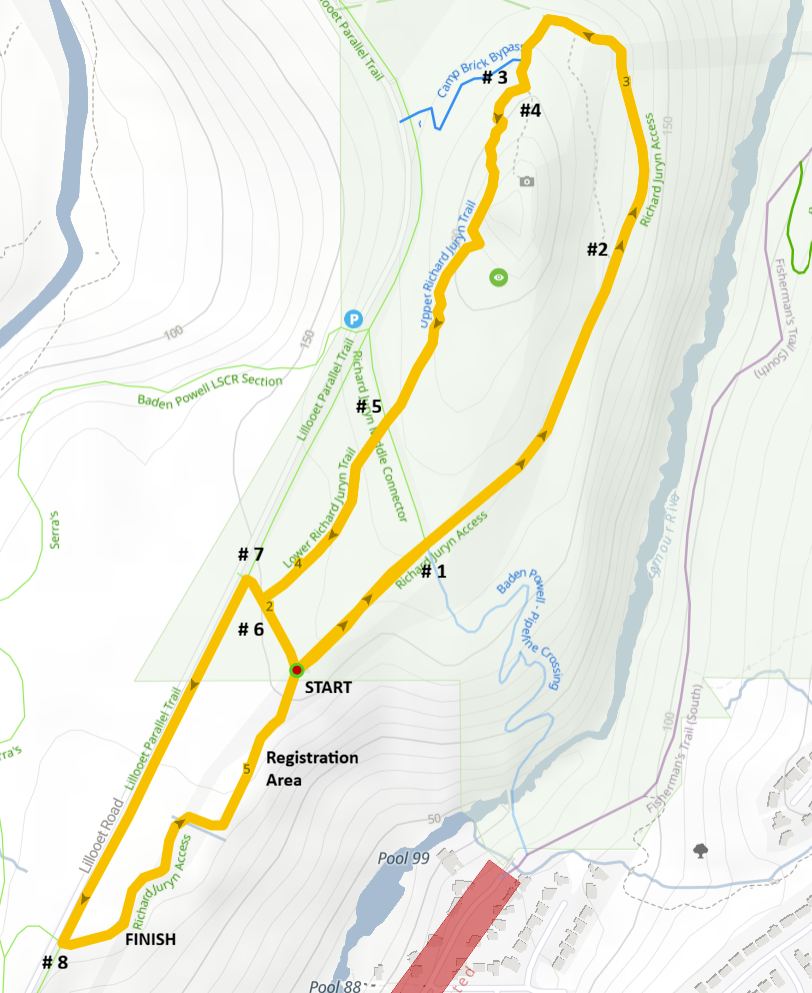

Race #1 – Richard Juryn XC
Opening race of the NSSSAA Mountain Bike League season at Richard Juryn Trail.
- Date: Wednesday, April 8
- Location: Richard Juryn Trail
- Registration Location: Just south of the START area, along Richard Juryn trail
- Parking: Riders will need to ride to the registration area, as there is no parking along the race route.
- Lower Seymour Conservation Reserve Park Gate
- Lynn Canyon Park East Parking Lot
- Lillooet-Clearwells Trailhead Parking
- Rice Lake Parking Lot
- NO DROP OFFs along Lillooet Road please
Race Day Schedule
Riders can pre-ride the course anytime before registration.
| Time | Division | Laps |
|---|---|---|
| 2:45 PM | Registration Opens - Coaches pick up race packages | — |
| 3:30 PM | Juvenile Boys / Juvenile Girls | 2 |
| 3:40 PM | Bantam Boys / Bantam Girls | 2 |
| 4:00 PM | Senior Boys / Senior Girls | 3 |
| 4:10 PM | Junior Boys / Junior Girls | 3 |
Course
Riders will complete laps of Upper Richard Juryn trail before heading down Lillooet Parallel Trail towards the Finish
Riders start near the trail entrance and climb into the upper loop before completing multiple laps depending on division. The course includes flowing singletrack, short punchy climbs, and fast descents before returning to the finish area.
Race Notes
- Please arrive early to allow time for registration.
- Riders should warm up off the race course.
- Follow marshal instructions and respect other trail users.
- Helmets must be worn at all times while riding.
- Be ready to race at your scheduled start time.
Marshal Information

We are looking for course marshals to help support race day. Marshals help direct riders, support safe trail access, and assist with course signage.
Please arrive early to check in and collect your marshal package.
Races start at 3:30 PM.
What you’ll do:
- Help maintain safe trail access for public users
- Let trail users know a race is in progress
- Direct riders along the course
- Assist with course signage at the end of the race
What to bring:
- A bike to reach your marshal location
- A small pack for carrying signage
- Weather-appropriate clothing
- Phone - we will use your number for race day communication